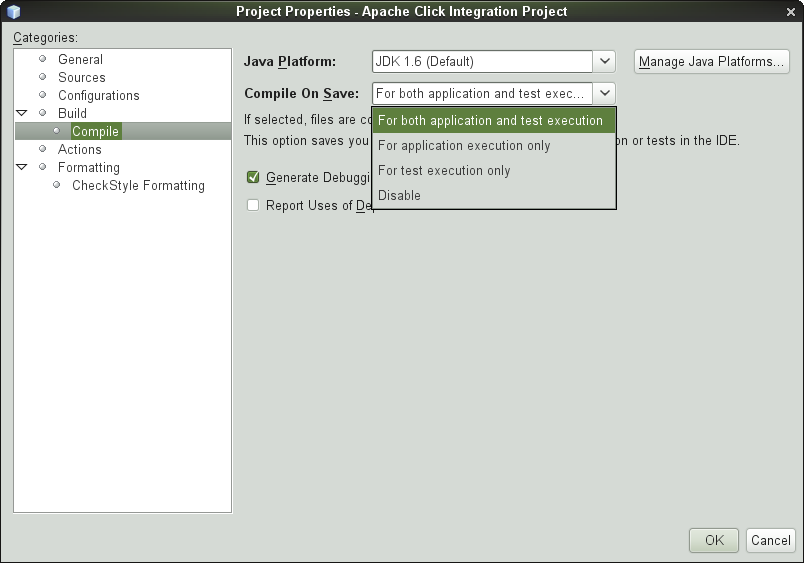

Debugando com Maven Jetty Plugin no Netbeans
by Gilberto C. Andrade on 13 Maio 2011
Tagged as: Apache-Click, Apache-Wicket, Application-Server, Debugging, Depurar, desenvolvimento, IDE, Java, JSF, maven, Metodologia-Ágil, NetBeans,
Jetty é um servidor web excelente. É rápido para iniciar o que o torna muito útil durante o desenvolvimento. A ferramente de construção Maven possui um plugin Jetty que podemos usar em nossos projetos de aplicação Web que utilizam Maven. Desta forma, podemos usar o Jetty para testar nossos arquivos HTML/JSP/JSF/Wicket/Click/etc. Podemos editar o arquivo JSP/HTML e atualizar nosso navegador para ver o resultado imediatamente. Podemos até mesmo compilar um arquivo de classe Java e o servidor Jetty irá reiniciar para que possamos testar o resultado no nosso navegador.
Vejamos como configurar o Jetty, utilizando como IDE o Netbeans 6.9 (deve funcionar para outras versões também!), para executar e principalmente para depurar (Debugging) a aplicação:
requisito: ser uma aplicação web gerenciada pelo Maven.
- Primeiro vamos habilitar a função Compilar ao Salvar (Compile On Save) em nosso projeto. Esta função vem habilitada somente para execução de testes em projetos gerenciados pelo Maven, aqui estamos ajustando para execução do fonte também:
 - Adicione o plugin jetty para o maven;
{kind=link}
<plugin>
<groupId>org.mortbay.jetty</groupId>
<artifactId>jetty-maven-plugin</artifactId>
<version>7.0.1.v20091125</version>
<configuration>
<!--reload>manual</reload-->
<scanIntervalSeconds>10</scanIntervalSeconds>
<stopKey>foo</stopKey>
<stopPort>9966</stopPort>
</configuration>
</plugin>
- Abra a janela de propriedades do projeto Maven e selecione Ações(Actions) da lista de categorias (Categories). Encontre a ação Executar (Run) e altere o valor do campo Metas de Execução (Execute Goals) para
jetty:stop jetty:run ;

- Então, faça o mesmo para ação Depurar Projeto(Debug project)
e adicione as seguintes propriedades:jpda.listen=maven netbeans.deploy.debugmode=true
O legal é poder depurar a aplicação web.
Pronto!! 
Referências: